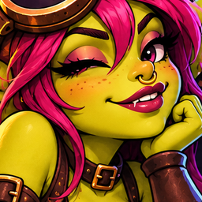

Export your own signed-in session. Nothing is sent to OnlyGoblins automatically.
No session collected.
This export grants access to your session. Never share it, attach it to an issue, or commit it. Clear clipboard history and delete your export after import.